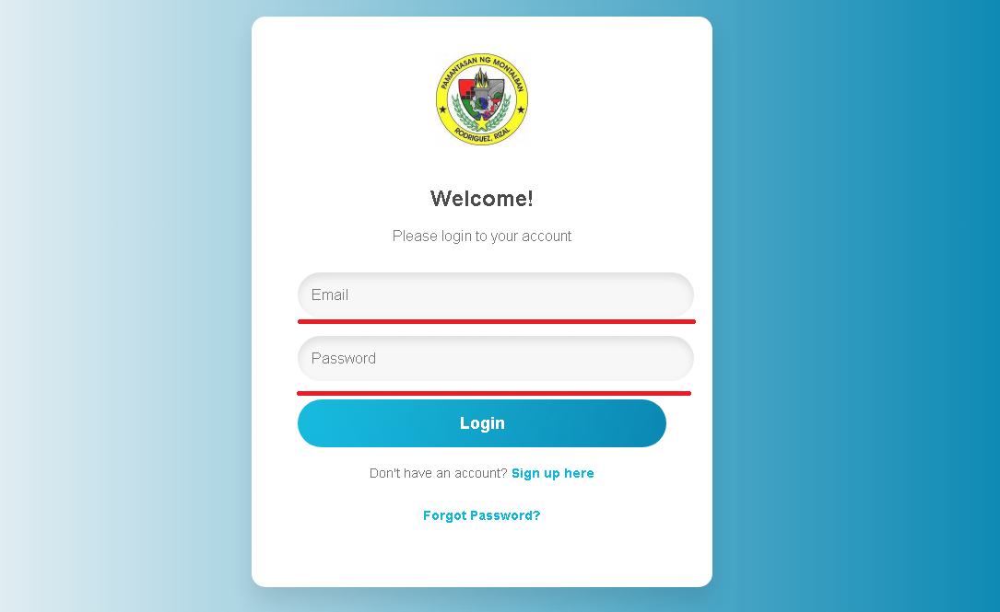
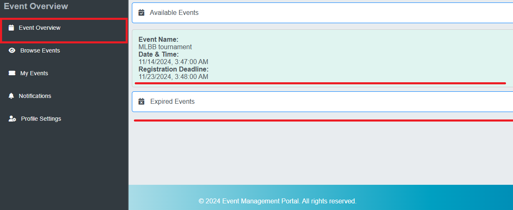
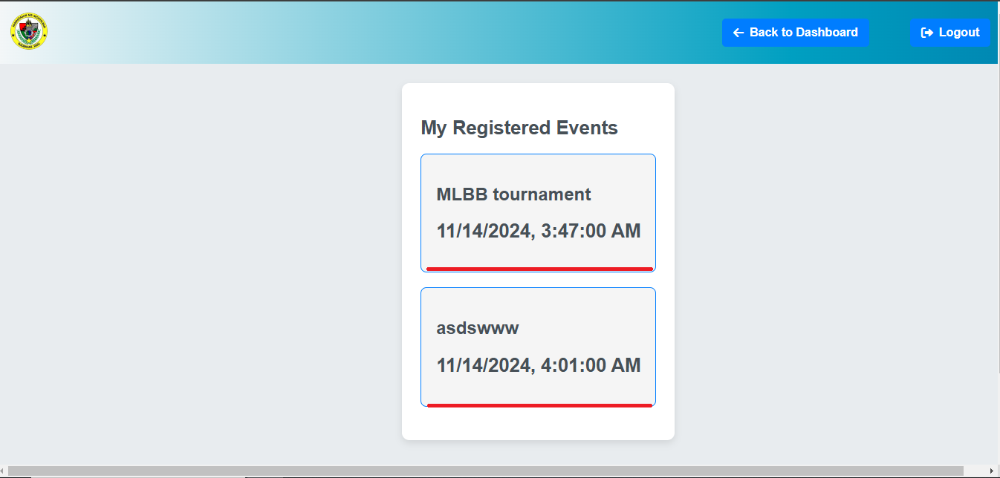
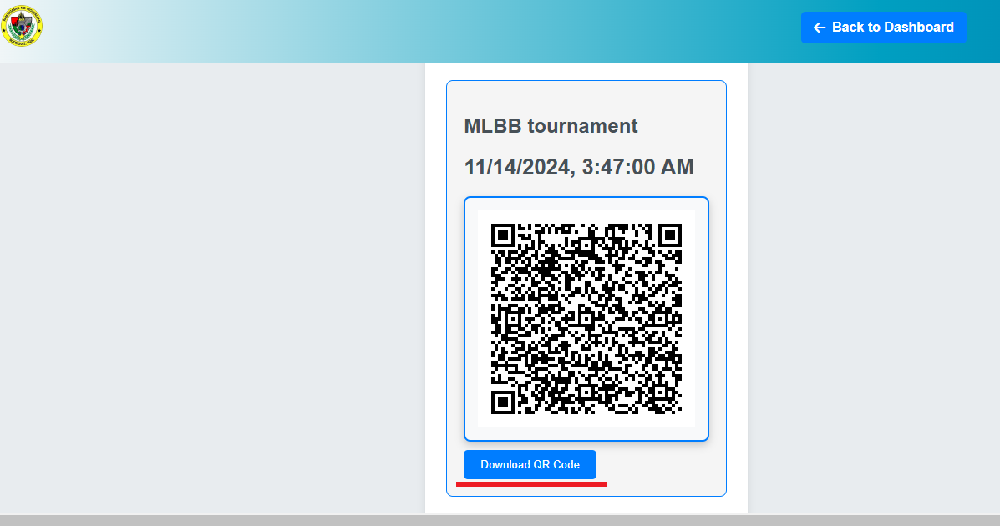

Step-by-Step Guide
Step 1: Logging In
First, navigate to the login page using your web browser. Enter your credentials (username and password) and click the Login button.

Step 2: Viewing an Event
Once logged in, you will be taken to the event dashboard. You can see what events are available or comming soon by clicking Available Events. Also you can see the expired events below.

Step 3: Browsing Events
After Event was created by the Admins and profs, you can browse what events you want to attend to generate a QR code for each student. Once you have a QR code, you can download it by clicking download button.

Step 4: My Events
It shows what event/s are already registered. By choosing the event, it shows the downloadable QR code for future attendance. The photo below shows the example QR code of the specific events.


Notifications
It shows the Announcements or other messages sends by the Admins and Professors

Profile settings
It shows the users data such as Name, Email, current Year % section, and Student id. Also profile settings has a several features like updating the section and year if you are already moved up, and password reset if you want to change your password.